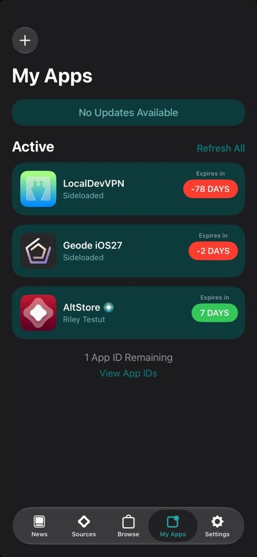

AltServer on macOS 27
-80045
Apple closed the door.
Twice.

AltServer ↔ Anisette ↔ Apple
Apple closed the door.
Twice.
Installing AltStore from the downloaded build worked on an iPad Pro and on an iPhone 15 Pro Max, and refreshing AltStore from the app worked too. The 2FA code was generated on a trusted device, because the SMS option currently fails.
